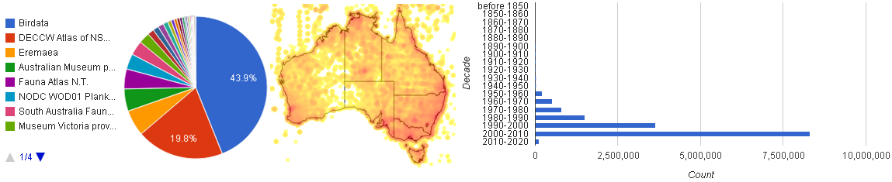

Atlas developments in 2011
Atlas developments in 2011
- By Donald Hobern
- April 5, 2011
- Tags: Blogs & news Communications
By Donald Hobern, Director, Atlas of Living Australia
The Atlas of Living Australia development team has been making significant progress in delivering the planned ALA tools and services. A number of these are already available and others will be launched in the coming months. Here is an update to highlight some of these developments.
The ALAÂ user needs analysis documented the most significant requirements for the ALA identified by Australian researchers and users of biodiversity information. The ALA business plans took these requirements and developed a vision for the components which could be delivered as part of the Atlas project in the period up to June 2012. Work on these components is continuing in parallel with new features and content being added continuously. As the project proceeds, we will be connecting these features to create more powerful and flexible tools, but here are some of the things that are possible today.
- Explore more than 23 million Australian species records
The ALA already serves as the richest access point on the web for finding online records of the distribution of Australian species. These come from specimens, field observations, photographs, and other sources. As an example, the illustration shows some of the visualisations and tools available for exploring the 17 million records of Australian animals currently in the ALA. Similar views are available for any species or higher taxon. Finer exploration of the data can be achieved by using the various filter options in the list view or by exploring the corresponding maps in the spatial portal (more below on this). - Explore the online data from Australia’s natural history collections
 Australia’s natural history collections are a vast treasure-house of specimens, documenting the country’s rich biodiversity and providing us with essential information on the characteristics, genetics, distribution and ecology of each species. The ALA provides a map and a list of these collections, along with information about each collection and an overview of the specimen data available for each collection through the Atlas.
Australia’s natural history collections are a vast treasure-house of specimens, documenting the country’s rich biodiversity and providing us with essential information on the characteristics, genetics, distribution and ecology of each species. The ALA provides a map and a list of these collections, along with information about each collection and an overview of the specimen data available for each collection through the Atlas. - Explore species distributions in fine detail
 The ALA spatial portal is the engine for detailed exploration of species distribution data in the context of Australian geography and environment. Many new features have been added over the last few months. The map above shows all records for all species of rock-wallaby (genus Petrogale), with locations for each species in a different colour, overlaid on a representation of the variation in annual mean solar radiation across the continent and a simplified base map with minimal detail. This tool supports flexible mapping for all species records shared through the Atlas, over 300,000 gazetteer locations, and over 300 environmental and other base layers. Species records may be mapped in summary form as a grid of cells (which facilitates rapid exploration of very large numbers of records) or as individual point locations. Users may upload their own spreadsheets of point data and map these in conjunction with ALA data resources. From within the spatial portal, it is possible to model likely species distributions from the environmental characteristics of known localities, to plot known localities in environmental space, to use environmental data to classify the landscape for simplified analysis, and to download spreadsheets of species distribution data including environmental values associated with the localities. This tool will continue to develop - and the user navigation will soon be simplified. To get started, view the spatial portal documentation, including a number of demonstration movies.
The ALA spatial portal is the engine for detailed exploration of species distribution data in the context of Australian geography and environment. Many new features have been added over the last few months. The map above shows all records for all species of rock-wallaby (genus Petrogale), with locations for each species in a different colour, overlaid on a representation of the variation in annual mean solar radiation across the continent and a simplified base map with minimal detail. This tool supports flexible mapping for all species records shared through the Atlas, over 300,000 gazetteer locations, and over 300 environmental and other base layers. Species records may be mapped in summary form as a grid of cells (which facilitates rapid exploration of very large numbers of records) or as individual point locations. Users may upload their own spreadsheets of point data and map these in conjunction with ALA data resources. From within the spatial portal, it is possible to model likely species distributions from the environmental characteristics of known localities, to plot known localities in environmental space, to use environmental data to classify the landscape for simplified analysis, and to download spreadsheets of species distribution data including environmental values associated with the localities. This tool will continue to develop - and the user navigation will soon be simplified. To get started, view the spatial portal documentation, including a number of demonstration movies. - Find (and share) identification tools for Australian species
 The ALA is partnering with the IdentifyLife project to support the development, sharing and use of identification tools. IdentifyLife has already set up Keys Central (pictured above), which allows any user to register an identification key or other identification tool or to find web-accessible tools for identifying different species groups in different regions. We encourage you to register any keys you know. The ALA will dynamically include links to these tools from its species pages. As our work with IdentifyLife progresses, we expect to build exciting new tools combining knowledge of species distribution and the data included in keys shared through IdentifyLife. ALA developers have also been redeveloping DELTA, a suite of tools for building and sharing species descriptions and keys. Australia has a strong community of DELTA users and this work will ensure that they remain able to use this tool and at the same time participate in activities such as IdentifyLife.
The ALA is partnering with the IdentifyLife project to support the development, sharing and use of identification tools. IdentifyLife has already set up Keys Central (pictured above), which allows any user to register an identification key or other identification tool or to find web-accessible tools for identifying different species groups in different regions. We encourage you to register any keys you know. The ALA will dynamically include links to these tools from its species pages. As our work with IdentifyLife progresses, we expect to build exciting new tools combining knowledge of species distribution and the data included in keys shared through IdentifyLife. ALA developers have also been redeveloping DELTA, a suite of tools for building and sharing species descriptions and keys. Australia has a strong community of DELTA users and this work will ensure that they remain able to use this tool and at the same time participate in activities such as IdentifyLife. - Use Atlas data and tools in your web site

It has always been the goal of the Atlas of Living Australia to build reusable tools and components which can be used to embed biodiversity information in other web sites. Over the last few months, ALA developers have built web service wrappers to many of the elements presented through Atlas species pages and collection pages. These services were used to build a prototype of an ALA-powered version of the OZCAM portal (see image above for two views). All of the function in this portal is made possible through reusable web services which could be plugged into other web sites. Right now these web services are still under development and the ALA has very limited capacity to assist others in using them. However, as they stabilise, we will document them and encourage developers to try them out.
This is a snapshot of some of the developments over the last few months. Much else has been happening and we will use the ALA blog to keep you updated on what’s new. We are also working to fix known problems with website performance in some parts of the country and to rework the entry pages and user navigation both for the main ALA portal and for the spatial portal to make them easier to understand and use.
Many thanks for your support and interest in all we are doing.